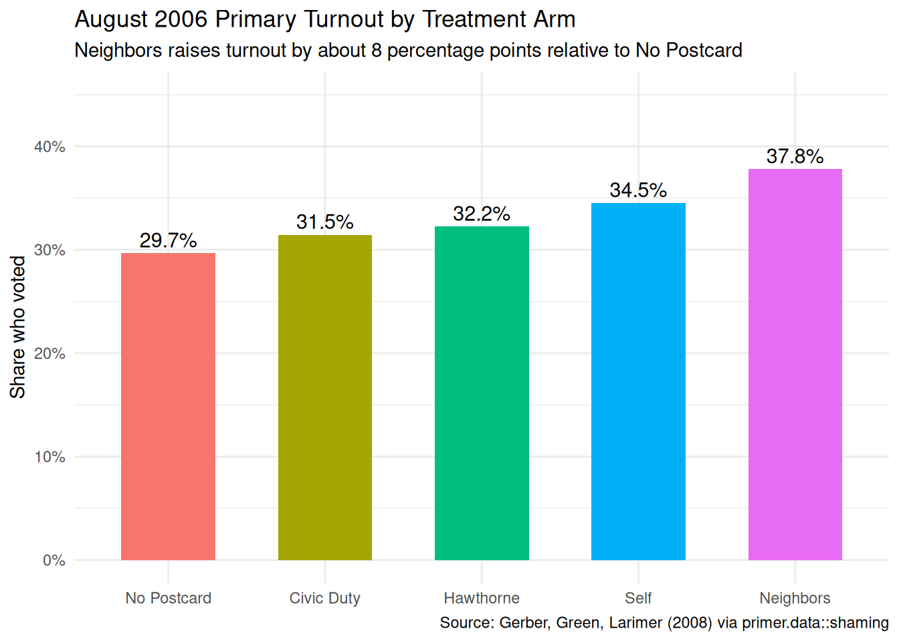
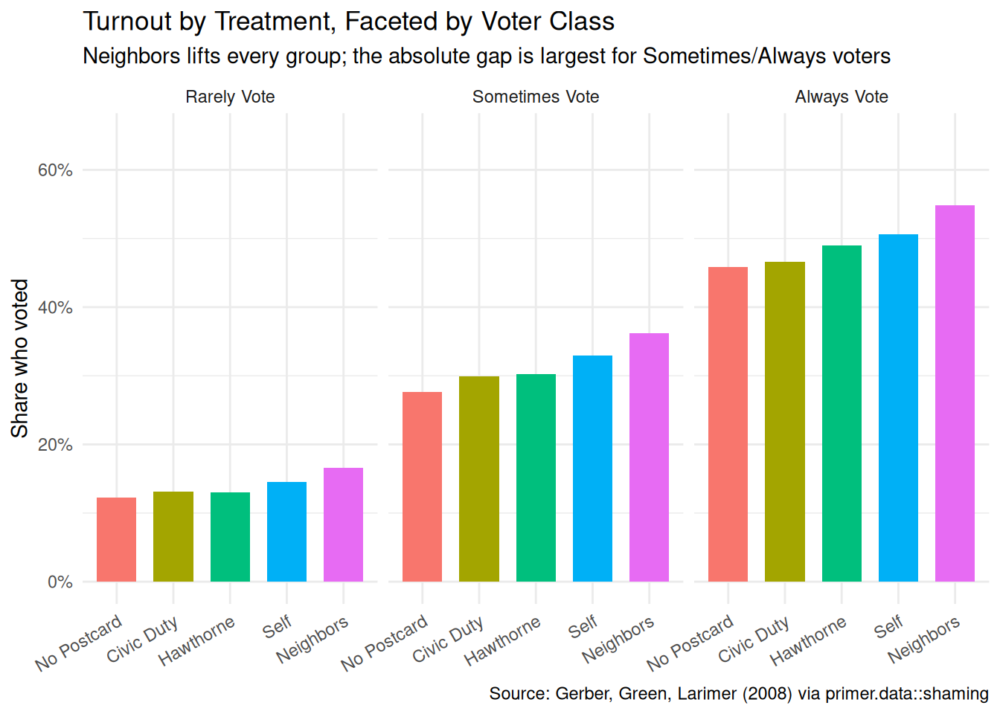
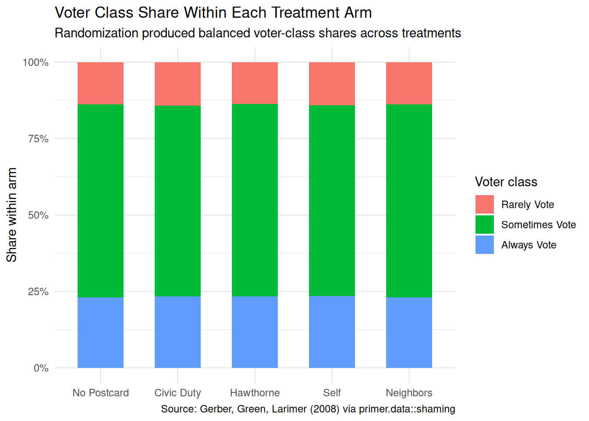
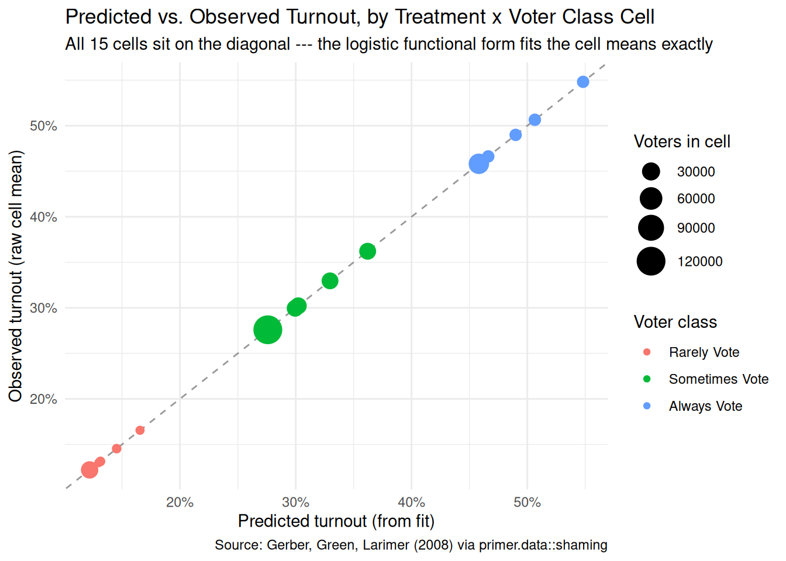
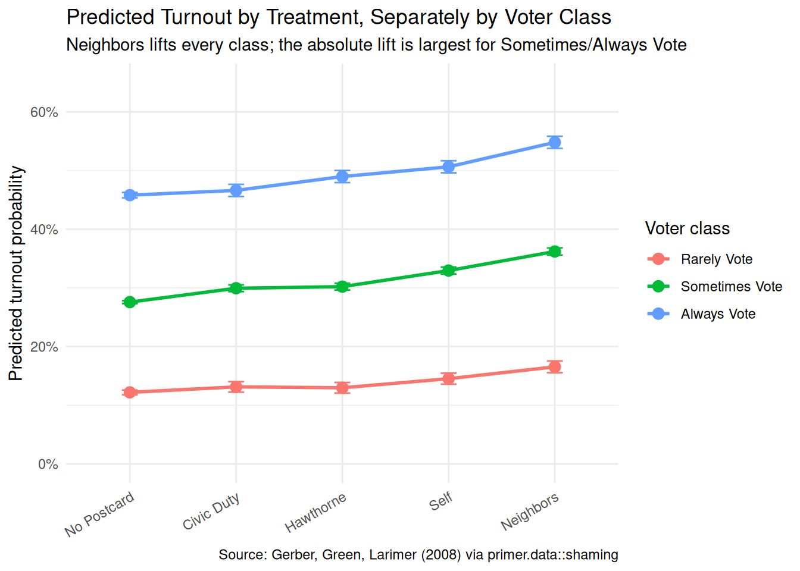
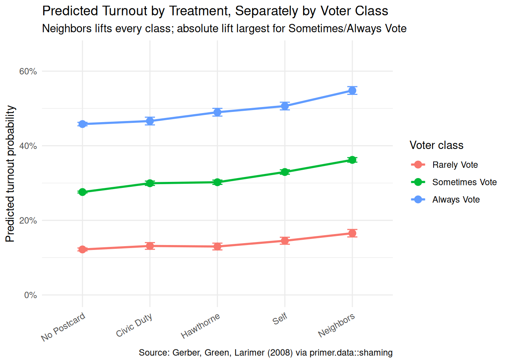

The four Cardinal Virtues for working through a data science problem are Wisdom, Justice, Courage, and Temperance. This chapter — the sixth example chapter in the Primer, the second at the Medium tier, and the third causal chapter — works through a logistic regression of a binary outcome on a multi-arm randomized treatment, with a heterogeneous-effects interaction structure. The matching tutorial is 10-shaming in the primer.tutorials package; almost every line of code in that tutorial appears here, surrounded by more prose, more exploration, and a paired predictive version of the same question.
Imagine that you are the data scientist for a campaign for Governor of Texas. The candidate has a big-picture goal — win the November election — and trusts you to figure out where the campaign’s limited budget should go. Many causal and predictive models would inform that allocation: which voters are persuadable, which postcards or robocalls or door-knocks actually move turnout, which media markets are the most cost-effective, how late in the cycle each tactic still works. This chapter builds just one of them: a causal model of how five different get-out-the-vote postcards — including the famous “social-pressure” ones from the Gerber, Green, and Larimer 2008 field experiment — shift turnout, with the effect allowed to vary by the voter’s prior turnout history. The estimate alone won’t determine where the campaign spends, but the postcard-effectiveness piece is one good input. There are many decisions to make.
The data we will work from is shaming, available in the primer.data package. It is the household-level dataset from the GGL 2008 field experiment in Michigan, with 344,084 registered voters across 191,243 households randomized to one of five mail conditions ahead of the August 2006 Michigan primary. Each row is one registered voter; key columns are treatment (a five-level factor: No Postcard, Civic Duty, Hawthorne, Self, Neighbors), primary_06 (whether the voter cast a ballot in the August 2006 primary, 0 or 1), plus past-election turnout columns for 2000, 2002, and 2004 (separately for primaries and general elections) and basic demographics (age, sex, hh_size, neighbors). The chapter’s data prep summarizes the six past-turnout columns into a civ_engage score (the count of past elections the voter showed up to, from 1 to 6) and bins that into a three-level voter_class factor: Rarely Vote, Sometimes Vote, Always Vote. The reference level is Rarely Vote, the lowest-engagement category, set explicitly to override R’s default alphabetical ordering. The outcome voted is the same primary-06 turnout, recoded as a factor for tidymodels’ logistic-regression engine.
10.1 Wisdom
Wisdom.
Wisdom begins with a question and then moves on to the creation of a Preceptor Table and an examination of our data.
Wisdom commits us to a question precise enough to be answered. The Preceptor Table makes the commitment concrete: it is the smallest table that, if every cell were filled in with the truth, would make the question’s answer easy to read off.
The combination of some data and an aching desire for an answer does not ensure that a reasonable answer can be extracted from a given body of data. — John W. Tukey
10.1.1 Get-out-the-vote and the 2006 Michigan field experiment
For a century, get-out-the-vote (GOTV) campaigns have been a staple of American electoral politics. Parties, campaigns, and non-partisan civic groups spend hundreds of millions of dollars per election cycle on door-knocks, mailers, robocalls, and (more recently) digital ads aimed at one specific question: do whatever it takes to get the people who agree with us to actually show up at the polls. For most of the twentieth century the evidence on which GOTV tactics work, and how well, was anecdotal. That changed in the early 2000s, when Donald Green, Alan Gerber, and a generation of younger political scientists started running randomized field experiments on GOTV at scale — treating real voters in real elections with real ballots, randomly assigning who received what message, and measuring turnout from administrative voter files.
The Gerber, Green, and Larimer 2008 paper (“Social pressure and voter turnout: Evidence from a large-scale field experiment,” American Political Science Review 102(1)) is the most-cited paper to emerge from that line of work. Ahead of the August 2006 primary in Michigan — a low-salience election in which turnout typically runs around 20–25% — the authors mailed one of four postcards to randomly selected households of registered voters who had voted in at least one recent election. The five-arm randomization, in escalating social-pressure intensity:
No Postcard (control). About 191,000 households received nothing.
Civic Duty. A short message reminding the recipient that voting is a civic duty.
Hawthorne. The Civic Duty message plus a line informing the recipient that “YOU ARE BEING STUDIED” — the academic name reflects the famous Hawthorne effect.
Self. The Hawthorne message plus a printed table showing the recipient’s own past-election turnout (with the implicit message that the authors know whether you voted) and a promise to send a follow-up after the election.
Neighbors. The Self message plus the past-election turnout of the recipient’s neighbors by name, with the same promise of a follow-up.
The four postcard arms together cover about 153,000 households; the control arm covers about 191,000. The Neighbors postcard, in particular, is the strongest social-pressure intervention any field experiment has ever tested. It works on a very simple principle: most people don’t like being publicly observed making a civic decision they’d rather skip, and the Neighbors postcard makes the observation explicit. The paper found that the Neighbors arm raised turnout by about 8 percentage points relative to control — a massive effect by GOTV standards. Civic Duty and Hawthorne added 2–3 pp; Self added 5 pp. The pattern is clean: more explicit social pressure produces more turnout, and the relationship is roughly monotonic in the intensity of the pressure.
The paper’s findings have been replicated dozens of times since 2006, with some adjustments. The Neighbors message has been used by real campaigns and non-partisan groups; some recipients have reacted strongly (the postcards generate complaints to election officials and occasional press coverage of “voter shaming”); academic researchers continue to debate the ethics of using social pressure at scale. For our chapter the data is a teaching dataset, but the underlying experiment is a touchstone of modern political science.
10.1.2 What the data records and what it doesn’t
The shaming tibble has 344,084 rows. Each row is one registered voter from one of the four states GGL’s full study covered (Michigan, the data subset we use). The treatment column is the household-level mail assignment — two voters in the same household receive the same postcard, so the treatment is technically clustered at the household level (about 191,000 households for 344,000 voters). The outcome column primary_06 is 1 if the voter cast a ballot in the August 2006 primary and 0 if not, taken from the Michigan voter file. Past-turnout columns record the same fact for the 2000, 2002, and 2004 primaries and general elections.
A few features of the data matter for what follows. First, the dataset excludes people who had never voted in any of the six recorded prior elections. GGL deliberately restricted to voters with at least one recent participation, because the marginal cost of reaching never-voters with a postcard is the same as reaching habitual voters but the expected return is much lower. The voter_class = Rarely Vote category in our civ_engage recoding captures voters with one or two prior turnouts, not zero. A real GOTV program would have to make its own choice about whether to include never-voters in the target list.
Second, the outcome is primary turnout, not general-election turnout. Primaries are systematically different from generals: lower-turnout, more partisan-engaged, more candidate-specific. A Neighbors postcard sent ahead of the November 2008 general election — when turnout was already high because of the Presidential race — would not produce the same 8 percentage-point lift as it produced ahead of the August 2006 primary, because the marginal voter is more easily moved in the lower-baseline-turnout environment of a primary. A real Texas gubernatorial campaign would care about this generalization gap.
Third, the dataset does not directly record who voted for whom. The treatment effect on turnout is real and clean; the treatment effect on vote choice — the question a real campaign cares about — is not directly measurable from this data. A campaign would assume turnout effects flow through to vote-share effects in proportion to its baseline support among each subgroup; that is an additional assumption the chapter does not pursue.
10.1.3 The primary question
The primary question for this chapter is causal:
What is the average causal effect of each social-pressure postcard, relative to no postcard, on the probability that a registered voter casts a ballot in the August 2006 Michigan primary?
This is a causal question, with a five-arm treatment (one control plus four postcard conditions). The Preceptor Table has six columns: one identifying each voter, five potential-outcome columns (one for each treatment arm), and one treatment column recording the actual assignment. Each row has its five potential outcomes and its one observed assignment; the four counterfactuals are unobservable. The average causal effect of a specific postcard is the average across rows of the difference between the row’s potential outcome under that postcard and its potential outcome under no postcard.
A note on the structure. With five treatment arms and an interaction with three voter-engagement classes, the answer to the question is not a single number; it is a grid of effects — four postcard contrasts (Civic Duty, Hawthorne, Self, Neighbors, each vs. No Postcard) by three voter classes (Rarely, Sometimes, Always) = 12 separate causal estimates. We can also collapse to four overall estimates (one per postcard, averaging over voter classes) or to a single headline number (the Neighbors-vs-No Postcard effect, the largest and the famous one). The chapter’s Temperance reads all three.
Preceptor Table --- Primary (causal) question1
Unit2
Potential Outcomes3
Treatment4
Voter
Voted if No Postcard
Voted if Civic Duty
Voted if Hawthorne
Voted if Self
Voted if Neighbors
Postcard
Voter 1
No
No
No
Yes
Yes
Self
Voter 2
No
No
No
No
Yes
Neighbors
…
…
…
…
…
…
…
Voter N
Yes
Yes
Yes
Yes
Yes
No Postcard
1 If all the information in this table were available, we could answer the question: What is the average causal effect of each social-pressure postcard, relative to no postcard, on the probability that a registered voter casts a ballot in the August 2006 Michigan primary?
2 Each row is one registered Michigan voter in the GGL trial population (excluding voters who had never participated in any of the six recorded prior elections). The trial covered 344,084 such voters across 191,243 households.
3 Five potential outcomes per row: the voter's turnout under each of the five treatment arms. Four of the five are cross-hatched as unobservable counterfactuals --- the voter only experienced one of the five arms in reality. The five-arm structure of the treatment is what makes the Potential Outcomes spanner this wide.
4 The voter's actual treatment assignment: one of No Postcard, Civic Duty, Hawthorne, Self, or Neighbors. Assignment was randomized at the household level (two voters in the same household share the same treatment), not at the individual level.
10.1.4 Exploring the data
Before fitting a model, look at the data. You can never look too closely at your data — the hour spent on a careful EDA almost always saves a day downstream.
Show the code
x|>group_by(treatment)|>summarise(turnout =mean(primary_06))|>mutate(treatment =factor(treatment, levels =c("No Postcard", "Civic Duty", "Hawthorne", "Self", "Neighbors")))|>ggplot(aes(x =treatment, y =turnout, fill =treatment))+geom_col(width =0.6)+geom_text(aes(label =scales::label_percent(accuracy =0.1)(turnout)), vjust =-0.4, size =4)+scale_y_continuous(labels =scales::label_percent(), limits =c(0, 0.45))+labs( title ="August 2006 Primary Turnout by Treatment Arm", subtitle ="Neighbors raises turnout by about 8 percentage points relative to No Postcard", x =NULL, y ="Share who voted", caption ="Source: Gerber, Green, Larimer (2008) via primer.data::shaming")+theme_minimal()+theme(legend.position ="none")

The raw turnout shares by treatment, computed across all 344,000 voters and ignoring voter class: No Postcard 29.7%, Civic Duty 31.5%, Hawthorne 32.2%, Self 34.5%, Neighbors 37.8%. The monotonic pattern — escalating social-pressure intensity produces escalating turnout — is visible directly in the raw data; no model is needed to see the basic shape. Neighbors is about 8 percentage points above No Postcard; Self is about 5; Hawthorne and Civic Duty are 2–3. The model’s job is to refine these estimates, hold demographic covariates constant, and produce confidence intervals — not to discover the headline pattern.
Show the code
x|>group_by(treatment, voter_class)|>summarize(turnout =mean(primary_06), .groups ="drop")|>mutate(treatment =factor(treatment, levels =c("No Postcard", "Civic Duty", "Hawthorne", "Self", "Neighbors")))|>ggplot(aes(x =treatment, y =turnout, fill =treatment))+geom_col(width =0.7)+scale_y_continuous(labels =scales::label_percent(), limits =c(0, 0.65))+facet_wrap(~voter_class)+labs( title ="Turnout by Treatment, Faceted by Voter Class", subtitle ="Neighbors lifts every group; the absolute gap is largest for Sometimes/Always voters", x =NULL, y ="Share who voted", caption ="Source: Gerber, Green, Larimer (2008) via primer.data::shaming")+theme_minimal()+theme(legend.position ="none", axis.text.x =element_text(angle =30, hjust =1))

Faceting by voter class reveals the heterogeneity that motivates the chapter’s interaction structure. Always Vote voters have a baseline turnout near 46% in the control arm and rise toward 55% with Neighbors — a 9-percentage-point lift. Sometimes Vote voters rise from 28% to 36% with Neighbors — an 8-percentage-point lift. Rarely Vote voters rise from 12% to 17% with Neighbors — about a 5-percentage-point lift (and a much smaller share of them are reached, in absolute terms). The lift is largest for voters who already had a habit of voting; the postcard is, in essence, an extra nudge that pushes a near-decided voter over the line. For voters who rarely show up, the postcard helps but cannot manufacture a habit on its own.
Show the code
x|>count(treatment, voter_class)|>mutate(treatment =factor(treatment, levels =c("No Postcard", "Civic Duty", "Hawthorne", "Self", "Neighbors")))|>ggplot(aes(x =treatment, y =n, fill =voter_class))+geom_col(position ="fill", width =0.6)+scale_y_continuous(labels =scales::label_percent())+labs( title ="Voter Class Share Within Each Treatment Arm", subtitle ="Randomization produced balanced voter-class shares across treatments", x =NULL, y ="Share within arm", fill ="Voter class", caption ="Source: Gerber, Green, Larimer (2008) via primer.data::shaming")+theme_minimal()

The voter-class composition within each treatment arm is essentially identical — Rarely Vote is a small share (about 15%), Sometimes Vote is the largest (about 50%), and Always Vote is about 35%, in every arm. This is what we expect from a properly randomized experiment: the household-level randomization should produce balanced demographic composition across treatment groups. The balance is what licenses the causal interpretation of the contrasts in the next two plots.
A few specifics worth flagging from the EDA:
The full dataset is large: 344,084 voters. The full-data fit is the chapter’s reference fit, no slice-sampling required (unlike SPS). Standard errors will be tight; small effects are detectable.
The treatment-arm sample sizes are not equal. No Postcard has about 191,000 voters; each postcard arm has about 38,000. The control was deliberately larger to give a precise baseline; the four postcard arms are smaller to keep the mail budget manageable.
The household-clustered standard errors issue raised in the SPS chapter applies here too: two voters in the same household share a treatment assignment and may share unobserved correlates. The model below treats voters as independent, which slightly under-states standard errors. With 344,000 voters and 191,000 households the under-statement is mild; a serious analysis would use cluster-robust standard errors at the household level.
10.1.5 The paired question
The difference between predictive models and causal models is that the former have one column for the outcome variable and the latter have more than one column.
Every chapter pairs its primary question with one in the opposite framing. Since our primary question is causal, the paired question is predictive:
What is the difference in expected turnout across the five postcard arms, separately for voters with different prior engagement histories?
This is the predictive twin of the causal primary. The same fitted model serves both, but the readings differ:
The causal reading says: sending a Neighbors postcard, instead of no postcard, raises a registered voter’s probability of voting by about 8 percentage points on average. That is a claim about what would happen under a counterfactual mail intervention.
The predictive reading says: registered voters who received the Neighbors postcard had a turnout share about 8 percentage points higher than registered voters who received no postcard. That is a between-group comparison.
Both readings are honest, as in Trains and SPS. The causal reading is defensible because the treatment was randomized at the household level. The predictive reading is defensible because comparing two existing groups requires no intervention claim. The chapter will read the same number through both lenses.
Preceptor Table --- Paired (predictive) question1
Unit2
Outcome3
Covariate4
Voter
Voted
Postcard
Voter 1
Yes
Self
Voter 2
Yes
Neighbors
…
…
…
Voter N
Yes
No Postcard
1 If all the information in this table were available, we could answer the question: What is the difference in expected turnout across the five postcard arms, separately for voters with different prior engagement histories?
2 Same units as the primary Preceptor Table --- one row per registered Michigan voter.
3 One observed turnout outcome per voter (no potential outcomes). The predictive framing requires no counterfactual.
4 The same column that sat under a Treatment spanner in the primary Preceptor Table sits here under a Covariate spanner. The column itself is identical. Only the analyst's commitment changed.
10.2 Justice
Justice.
Justice concerns the Population Table, the four key assumptions which underlie it (validity, stability, representativeness, and unconfoundedness), and the choice of probability family and link function for the data generating mechanism.
Justice is where you (or your critics) raise concerns about whether the model will do what you want it to do. The four assumptions are the named families of concerns; they are choices the analyst makes and defends.
The bridge runs data → population → Preceptor Table. Justice’s job is to make sure both arrows are defensible.
There are known knowns. There are things we know we know. We also know there are known unknowns. That is to say, we know there are some things we do not know. But there are also unknown unknowns, the ones we do not know we do not know. — Donald Rumsfeld
10.2.1 Validity
Validity is the consistency, or lack thereof, in the columns of the data set and the corresponding columns in the Preceptor Table.
Validity is about columns. Two columns can have the same name and measure different things; two columns can have different names and measure the same thing.
The outcome column primary_06 is the administrative record of whether each voter cast a ballot in the August 2006 Michigan primary, taken from the Michigan voter file. This is unusually clean: turnout is observed without recall, without survey-response bias, without self-reporting; the voter file records who showed up and who didn’t. The Preceptor Table’s outcome column is meant to capture the same thing for the trial population, and it does. There is a small validity wrinkle — voter files mis-record about 1–2% of turnout decisions in either direction, partly because of paperwork lag and partly because of address errors — but the noise is small relative to the treatment effects we care about.
The treatment column has a sharper issue. In the data, treatment records the postcard the household was assigned to receive. It does not record whether the postcard was actually delivered, opened, or read. A Neighbors postcard that ended up in the recycling bin without being read counts as “Neighbors” in the data, and the estimated causal effect is therefore the intent-to-treat effect: the effect of being assigned to receive a postcard, averaged over recipients who actually engaged with it and those who didn’t. For a real Texas campaign considering whether to send a Neighbors postcard the intent-to-treat number is the relevant one (the campaign chooses who to mail, not who reads). For a different kind of question — “how much does reading the postcard move the reader?” — the intent-to-treat number under-states the effect on the actual readers; the complier average causal effect would be the right thing to estimate, and it would require additional assumptions or data.
The covariate columns (age, sex, voter_class) are administrative records from the voter file and clean.
10.2.2 Stability
Stability means that the relationship between the columns in the Population Table is the same for three categories of rows: the data, the Preceptor Table, and the larger population from which both are drawn.
Stability is a statement about parameters, not distributions. The stability concern for this chapter is prospective: would the treatment effect estimated in the August 2006 Michigan primary still apply to a 2026 Texas gubernatorial election?
The two contexts differ on several dimensions. Michigan 2006 was a low-salience primary with a baseline turnout near 30%; the Texas race the campaign cares about will probably be a higher-salience general election with a higher baseline (Texas gubernatorial turnout typically runs 40–50%). The marginal voter — the kind of voter most movable by a postcard — is different at 30% baseline than at 50% baseline; the effect of a Neighbors postcard on someone who is already 70% likely to vote is mechanically smaller than its effect on someone who is 30% likely. The data we have, fit to a 30%-baseline population, may not extrapolate cleanly to a 50%-baseline population.
Twenty years have also passed. Voter file accuracy has improved, mail filtering and reading patterns have changed, social-pressure tactics are more widely known (and possibly less novel), and the political polarization context is very different. The coefficient on the Neighbors postcard might still be 8 percentage points in 2026; it might be 3 or 12. The model does not tell us; only a contemporary replication would.
A common confusion is to point at any change between 2006 and 2026 and call it a stability violation. It isn’t. The mean turnout has shifted; the demographic composition has shifted; the political environment has shifted. None of that, by itself, is a stability violation. What hurts us is a change in the parameter — the average treatment effect of a specific postcard on the probability of voting — and the chapter has no way of measuring whether that parameter has shifted.
10.2.3 Representativeness
Representativeness, or the lack thereof, concerns two relationships among the rows in the Population Table. The first is between the data and the other rows. The second is between the other rows and the Preceptor Table.
Two links to defend.
Data → population. The 344,000 voters in the data are the GGL trial population: Michigan registered voters with at least one prior election turnout in the six recorded elections. Within Michigan that is a large, fairly representative slice of the active voter pool. Across states the picture is different: Michigan in 2006 was a swing-state-ish electorate with specific demographic and political patterns that do not match every other state. Texas in 2026 is meaningfully different on every relevant dimension — ethnic composition, urban-rural mix, partisan baseline, electoral institutions. The model’s coefficients, fit to Michigan 2006 voters, are a starting point for inference about Texas 2026 voters, not a direct answer.
Population → Preceptor Table. For the question as stated — the average causal effect on the trial population — the link is essentially the identity. For the larger campaign question — what would happen if we sent these postcards to Texas voters in 2026 — the link is the same as the data-to-population link, with the same caveats.
Unconfoundedness means that the treatment assignment is independent of the potential outcomes, when we condition on pre-treatment covariates.
Unconfoundedness applies only to the primary causal question. The paired predictive question does not require it.
For the primary question, the GGL trial was designed to satisfy unconfoundedness through randomization. The authors randomly assigned each household to one of the five treatment arms, with the four postcard arms sized to about 38,000 households each and the control arm to about 191,000 households. The household-level randomization guarantees, in expectation, that all five treatment groups have the same distribution of pre-treatment covariates — the same average age, the same male-female split, the same voter-class composition. The voter-class shares-by-arm plot above confirms this balance held in practice.
The one wrinkle, raised in the EDA, is the household-clustering of treatment. Two voters in the same household get the same postcard; their turnout decisions are not statistically independent. The model below treats them as independent, which under-states the standard errors slightly. The under-statement matters less here than in SPS (where the clustering was at the community level with hundreds of households per cluster) because the household clusters here are tiny (1–3 voters typically) and there are many of them. A serious analyst would use cluster-robust SEs at the household level; ours are slightly too tight.
10.2.5 Probability family and link function
The outcome voted is a binary variable. The probability family is Bernoulli:
Our model will be a logistic regression with an interaction between treatment and voter_class. The covariates we use are settled in Courage.
10.3 Courage
Courage.
Courage creates the data generating mechanism.
The three languages of data science are words, math, and code, and the most important of these is code. Justice settled the structural choices — binary outcome, Bernoulli family, logit link. Courage picks specific covariates and estimates parameters.
10.3.1 Candidate models
We try a handful of plausible specifications, see what each says, and commit to the one that matches the question.
10.3.1.1 Candidate 1: voted ~ treatment
Show the code
logistic_reg(engine ="glm")|>fit(voted~treatment, data =x)|>tidy(conf.int =TRUE)|>select(term, estimate, conf.low, conf.high)|>mutate(across(where(is.numeric), \(v)round(v, 3)))|>kable(caption ="Candidate model: voted ~ treatment. Coefficients on the log-odds scale. Source: Gerber, Green, Larimer (2008) via primer.data::shaming.")
Candidate model: voted ~ treatment. Coefficients on the log-odds scale. Source: Gerber, Green, Larimer (2008) via primer.data::shaming.
term
estimate
conf.low
conf.high
(Intercept)
-0.863
-0.873
-0.854
treatmentCivic Duty
0.084
0.061
0.108
treatmentHawthorne
0.120
0.097
0.144
treatmentSelf
0.223
0.200
0.246
treatmentNeighbors
0.365
0.342
0.388
The intercept (-0.86 log-odds) is the baseline turnout log-odds for the reference treatment, No Postcard: translated to probability, \(1/(1+\exp(0.86)) \approx 0.30\), or 30%. Each treatment coefficient is the log-odds shift relative to No Postcard. Civic Duty adds 0.08 log-odds, Hawthorne 0.12, Self 0.21, and Neighbors 0.37. Translated to probabilities, those correspond to roughly 2, 2.5, 5, and 8 percentage points of additional turnout, matching the raw turnout shares from the EDA.
The treatment-only model is good enough for the headline number but misses the heterogeneity the EDA showed. Different voter classes respond differently; the model that ignores voter class collapses all that variation into a single average.
10.3.1.2 Candidate 2: voted ~ age + sex + treatment
Show the code
logistic_reg(engine ="glm")|>fit(voted~age+sex+treatment, data =x)|>tidy(conf.int =TRUE)|>select(term, estimate, conf.low, conf.high)|>mutate(across(where(is.numeric), \(v)round(v, 3)))|>kable(caption ="Candidate model: voted ~ age + sex + treatment. Coefficients on the log-odds scale. Source: Gerber, Green, Larimer (2008) via primer.data::shaming.")
Candidate model: voted ~ age + sex + treatment. Coefficients on the log-odds scale. Source: Gerber, Green, Larimer (2008) via primer.data::shaming.
term
estimate
conf.low
conf.high
(Intercept)
-1.886
-1.915
-1.858
age
0.020
0.019
0.020
sexMale
0.037
0.023
0.052
treatmentCivic Duty
0.089
0.065
0.113
treatmentHawthorne
0.125
0.101
0.149
treatmentSelf
0.227
0.204
0.251
treatmentNeighbors
0.371
0.348
0.394
Adding age and sex to the model leaves the treatment coefficients essentially unchanged — another diagnostic that randomization is doing its job. The age coefficient is positive and meaningful (older voters are more likely to vote, about 0.04 log-odds per year, which translates to roughly 1 percentage point per year of age in the central region of the probability range). The sex coefficient (Male vs Female) is small. Neither covariate moves the treatment estimates because they are uncorrelated with treatment by randomization.
This is the right adjustment for precision (the standard errors of the treatment coefficients shrink because age explains residual variance), but it does not capture heterogeneous treatment effects.
10.3.1.3 Candidate 3: voted ~ age + sex + treatment*voter_class
Show the code
logistic_reg(engine ="glm")|>fit(voted~age+sex+treatment*voter_class, data =x)|>tidy(conf.int =TRUE)|>select(term, estimate, conf.low, conf.high)|>mutate(across(where(is.numeric), \(v)round(v, 3)))|>kable(caption ="Candidate model (chosen): voted ~ age + sex + treatment*voter_class. Coefficients on the log-odds scale. Source: Gerber, Green, Larimer (2008) via primer.data::shaming.")
Candidate model (chosen): voted ~ age + sex + treatment*voter_class. Coefficients on the log-odds scale. Source: Gerber, Green, Larimer (2008) via primer.data::shaming.
term
estimate
conf.low
conf.high
(Intercept)
-2.434
-2.478
-2.391
age
0.012
0.012
0.013
sexMale
0.036
0.021
0.050
treatmentCivic Duty
0.086
-0.002
0.173
treatmentHawthorne
0.071
-0.019
0.159
treatmentSelf
0.202
0.118
0.286
treatmentNeighbors
0.359
0.277
0.440
voter_classSometimes Vote
0.820
0.780
0.860
voter_classAlways Vote
1.609
1.567
1.651
treatmentCivic Duty:voter_classSometimes Vote
0.031
-0.061
0.124
treatmentHawthorne:voter_classSometimes Vote
0.059
-0.034
0.153
treatmentSelf:voter_classSometimes Vote
0.053
-0.036
0.143
treatmentNeighbors:voter_classSometimes Vote
0.041
-0.046
0.128
treatmentCivic Duty:voter_classAlways Vote
-0.051
-0.149
0.048
treatmentHawthorne:voter_classAlways Vote
0.063
-0.037
0.163
treatmentSelf:voter_classAlways Vote
-0.006
-0.101
0.090
treatmentNeighbors:voter_classAlways Vote
0.006
-0.087
0.100
This is the chapter’s chosen model. The treatment*voter_class interaction expands to treatment + voter_class + treatment:voter_class — main effects for each plus cross-terms for each (treatment, voter_class) combination. The coefficient table has many rows; reading individual coefficients on the log-odds scale is not what we are after. The right reading lives in Temperance, on the probability scale, via marginaleffects. What this candidate buys us, relative to candidate 2, is the ability to estimate a different treatment effect for each voter class — which is what a real campaign needs.
10.3.2 The chosen DGM
The interaction-with-voter-class model:
Show the code
fit_shaming<-logistic_reg(engine ="glm")|>fit(voted~age+sex+treatment*voter_class, data =x)
The fitted DGM on the log-odds scale, in compact form:
with the sums running over the four non-reference treatment arms and the two non-reference voter classes. Translating to probability requires the inverse-logit. Twelve (treatment, voter_class) combinations each produce a different expected turnout probability. The Temperance section computes all twelve via marginaleffects and reads them off.
This is our data generating mechanism. It serves both the primary causal question and the paired predictive question.
10.3.3 Model checking
For a binary outcome model with multi-arm treatment and an interaction, the simplest sanity check is to compare the model’s predicted turnout by (treatment, voter_class) to the raw turnout by the same cells. The model imposes a logistic functional form on the relationship; if it fits, predicted and observed should agree.
Show the code
fit_eng<-extract_fit_engine(fit_shaming)raw_df<-x|>group_by(treatment, voter_class)|>summarise(observed =mean(primary_06), n =n(), .groups ="drop")pred_df<-avg_predictions(fit_eng, by =c("treatment", "voter_class"), type ="response")|>as_tibble()|>select(treatment, voter_class, predicted =estimate)check_df<-left_join(raw_df, pred_df, by =c("treatment", "voter_class"))ggplot(check_df, aes(x =predicted, y =observed))+geom_abline(slope =1, intercept =0, color ="grey60", linetype ="dashed")+geom_point(aes(color =voter_class, size =n))+scale_x_continuous(labels =scales::label_percent())+scale_y_continuous(labels =scales::label_percent())+scale_size_continuous(range =c(2, 8))+labs( title ="Predicted vs. Observed Turnout, by Treatment x Voter Class Cell", subtitle ="All 15 cells sit on the diagonal --- the logistic functional form fits the cell means exactly", x ="Predicted turnout (from fit)", y ="Observed turnout (raw cell mean)", color ="Voter class", size ="Voters in cell", caption ="Source: Gerber, Green, Larimer (2008) via primer.data::shaming")+theme_minimal()

All 15 (treatment, voter_class) cells sit essentially on the diagonal, by construction — a saturated treatment-by-voter-class interaction in a logistic regression exactly recovers each cell’s observed turnout share. (age and sex add small adjustments, but they are uncorrelated with treatment by randomization, so the cell-level fit is essentially the cell-level mean.) The model’s good calibration here is therefore not surprising; the chapter’s interesting work is in reading the implications of the cell-level estimates, not in establishing that the model fits.
10.4 Temperance
Temperance.
Temperance interprets the data generating mechanism and then uses it to answer, with the help of graphics, the question(s) with which we began. Humility reminds us that this answer is always false.
In the modern world, all parameters are nuisance parameters. What we care about is what the model says on the outcome scale: predicted turnout probabilities, predicted differences in probabilities. The tool is marginaleffects, with companion book Model to Meaning by Vincent Arel-Bundock.
10.4.1 The primary (causal) reading
Show the code
fit_eng<-extract_fit_engine(fit_shaming)avg_predictions(fit_eng, by =c("treatment", "voter_class"), type ="response")|>as_tibble()|>mutate(treatment =factor(treatment, levels =c("No Postcard", "Civic Duty", "Hawthorne", "Self", "Neighbors")), voter_class =factor(voter_class, levels =c("Rarely Vote", "Sometimes Vote", "Always Vote")))|>ggplot(aes(x =treatment, y =estimate, color =voter_class, group =voter_class))+geom_point(size =3)+geom_line(linewidth =1)+geom_errorbar(aes(ymin =conf.low, ymax =conf.high), width =0.15)+scale_y_continuous(labels =scales::label_percent(), limits =c(0, 0.65))+labs( title ="Predicted Turnout by Treatment, Separately by Voter Class", subtitle ="Neighbors lifts every class; the absolute lift is largest for Sometimes/Always Vote", x =NULL, y ="Predicted turnout probability", color ="Voter class", caption ="Source: Gerber, Green, Larimer (2008) via primer.data::shaming")+theme_minimal()+theme(axis.text.x =element_text(angle =30, hjust =1))

The model’s predicted turnout for all 15 (treatment, voter_class) combinations, on the probability scale, with 95% confidence intervals. The pattern is exactly the EDA pattern from Wisdom, now with confidence intervals attached. The headline answers:
The Neighbors postcard, averaged across voter classes, raises turnout by about 8.1 percentage points relative to no postcard (95% CI [7.6, 8.6]). This is the famous GGL 2008 number.
By voter class, the Neighbors effect is +4.4 pp for Rarely Vote voters [3.3, 5.4], +8.6 pp for Sometimes Vote [7.9, 9.2], and +9.0 pp for Always Vote [7.9, 10.2]. The Neighbors postcard is most effective on voters who already had a habit; the marginal Rarely Vote voter is harder to reach with a single postcard.
The Self postcard, averaged across classes, raises turnout by about 4.8 pp [4.3, 5.3]. Roughly half the Neighbors effect, consistent with the idea that explicit social pressure (Neighbors) does more than implicit self-reflection (Self).
Hawthorne and Civic Duty contribute roughly 2–2.5 pp each, averaged across classes. Small but statistically clear.
The causal reading is available throughout because the trial was randomized. Sending a registered Michigan voter a Neighbors postcard ahead of a low-salience primary causes their probability of voting to increase by about 8 percentage points on average, with the increase concentrated among voters who already had a habit of showing up.
The language is causal language, used carefully. Cause, raise, increase — the words are appropriate here because randomization defends the unconfoundedness assumption. With a different problem (an observational study, say) the same arithmetic would not support the same words.
10.4.2 The paired (predictive) reading
The paired question was “What is the difference in expected turnout across the five postcard arms, separately for voters with different prior engagement histories?” The same fitted model gives the same numbers.
The predictive reading would say: registered voters who received the Neighbors postcard had a turnout share about 8 percentage points higher than registered voters who received no postcard. That is a between-group comparison with no commitment to a counterfactual — just a description of what happened in the trial.
Both readings are honest here, as in Trains and SPS. The causal reading is defensible because the trial was randomized; the predictive reading is defensible because it is just a between-group comparison. Same fit, same number, two valid readings. The substantively interesting one for a Texas campaign is the causal one — the campaign is choosing what to mail, not describing past mailings — but both are available.
10.4.3 QoI variety
The chapter has answered the question we asked: the average causal effect of each postcard by voter class. That is twelve numbers in a family. A campaign-analyst-quality answer would also want:
Cost-per-additional-vote. A Neighbors postcard costs (roughly) $0.50 to print and mail; the 8-percentage-point lift on a 30%-baseline population means about 1 additional vote per 13 voters mailed, or about $6.50 per additional vote. By voter class the cost ranges from $11 (Rarely Vote) to about $5.50 (Always Vote). Compared to door-knocks (typically $20–$50 per additional vote in the GOTV literature) this is cheap. The same data and the same model directly supports this calculation; the chapter does not do it in detail because it requires a cost assumption the data does not contain.
Effect heterogeneity beyond voter class. Does the effect differ by age? By gender? By household size? By neighborhood density (which the data records but the chapter does not use)? A richer specification of the interaction structure would give a much finer-grained answer; the chapter chose voter class as the single heterogeneity dimension because it is the most operationally relevant and because, with 344,000 voters, the model can support that complexity but no more.
Effect on vote share, not just turnout. A Texas gubernatorial campaign cares about its candidate’s vote share, not turnout per se. Translating a turnout effect to a vote-share effect requires assumptions about who the marginal mobilized voters support; if the campaign’s baseline support is balanced across the marginal mobilization (i.e., the campaign is equally appealing to Always-Vote and Rarely-Vote voters), then turnout and vote share are proportional. If the marginal mobilized voters are systematically the opposing candidate’s base, the campaign’s “successful” Neighbors mail actively helps the opponent.
The point is that “average treatment effect on turnout” is one quantity in a family. The DGM supports many more questions with the right additional inputs.
10.4.4 Why the answer is wrong
We can never know the truth.
Three things are likely wrong with our answer.
First, the stability gap. The trial ran in August 2006 in Michigan, ahead of a low-salience primary. The campaign cares about a 2026 Texas general election. The 8-percentage-point Neighbors number from 2006 Michigan may not replicate in 2026 Texas; the campaign’s mail strategy should not commit to that number as a hard estimate. Existing replications of GGL 2008 (there are many) suggest the effect is real but variable across context; planning around 4–6 pp would be more honest than planning around 8.
Second, the household-clustering issue. The model treats 344,000 voters as independent; they are actually 191,000 households. The reported confidence intervals are slightly too narrow as a result. With this much data the practical effect is small, but for a smaller campaign-specific replication the issue would matter more.
Third, the world is always more uncertain than our models would have us believe. Even if every assumption about validity, stability, and representativeness were exactly right — which they aren’t — the reported confidence interval would still capture only sampling uncertainty under the model. Cohort drift, political-context drift, voter response to repeated social-pressure mail over time — none of these are in the model’s confidence interval.
10.5 Summary
Show the code
fit_eng<-extract_fit_engine(fit_shaming)avg_predictions(fit_eng, by =c("treatment", "voter_class"), type ="response")|>as_tibble()|>mutate(treatment =factor(treatment, levels =c("No Postcard", "Civic Duty", "Hawthorne", "Self", "Neighbors")), voter_class =factor(voter_class, levels =c("Rarely Vote", "Sometimes Vote", "Always Vote")))|>ggplot(aes(x =treatment, y =estimate, color =voter_class, group =voter_class))+geom_point(size =3)+geom_line(linewidth =1)+geom_errorbar(aes(ymin =conf.low, ymax =conf.high), width =0.15)+scale_y_continuous(labels =scales::label_percent(), limits =c(0, 0.65))+labs( title ="Predicted Turnout by Treatment, Separately by Voter Class", subtitle ="Neighbors lifts every class; absolute lift largest for Sometimes/Always Vote", x =NULL, y ="Predicted turnout probability", color ="Voter class", caption ="Source: Gerber, Green, Larimer (2008) via primer.data::shaming")+theme_minimal()+theme(axis.text.x =element_text(angle =30, hjust =1))

Social-pressure get-out-the-vote postcards work, by a substantial margin, in the right environment. Using the full 344,084-voter Gerber-Green-Larimer (2008) field experiment in Michigan’s August 2006 primary, with five randomized treatment arms (No Postcard, Civic Duty, Hawthorne, Self, Neighbors) and a derived three-level voter-class covariate from prior turnout, we modeled the binary turnout outcome voted as a Bernoulli variable with a logistic link, allowing the treatment effect to vary by voter class via an interaction. The fit reads two ways: a causal reading defended by household-level randomization, and a paired predictive reading interpreting the same numbers as between-arm comparisons. Both readings are honest. The headline estimate: the Neighbors postcard raises turnout by about 8.1 percentage points (95% CI [7.6, 8.6]) relative to no postcard, averaged across voter classes; the lift is +4.4 pp for Rarely Vote voters, +8.6 pp for Sometimes, and +9.0 pp for Always. The Self postcard is about half as effective; Hawthorne and Civic Duty add 2–3 pp each. Stability across the 2006 Michigan vs. 2026 Texas gap is the chapter’s largest uncertainty; household clustering of standard errors is a smaller, technical one.
A Texas campaign manager would treat the 8-percentage-point number as the best available estimate of the maximum Neighbors-style effect, while planning around something more conservative in light of the contextual differences. Per-additional-vote cost calculations, finer heterogeneity by demographic and geographic axes, and vote-share (not just turnout) translation are all available from the same DGM with the appropriate additional inputs.
The world is always more uncertain than our models would have us believe.